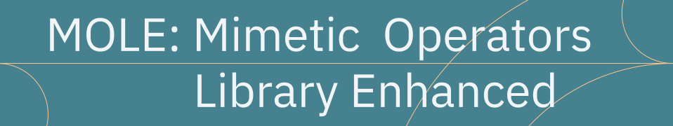

CSE Applications Using MOLE
This section will describe computational science and engineering applications that use MOLE operators and numerical methods.

| Lead Collaborator | Project(s) |
|---|---|
|
Damian Rouson Lawrence Berkeley National Laboratory |
Development of Formal, a Fortran implementation of the mimetic differences algorithms used in the MOLE Library |
This section will describe computational science and engineering applications that use MOLE operators and numerical methods.
This section will describe how MOLE works with other libraries, software ecosystems, programming languages, and research tools.